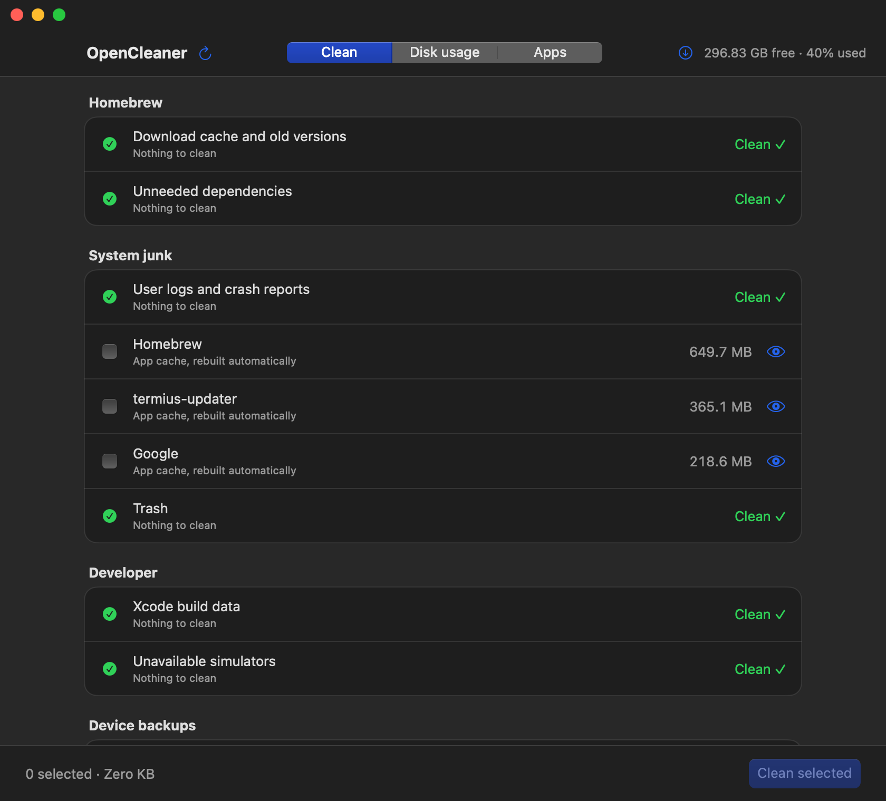
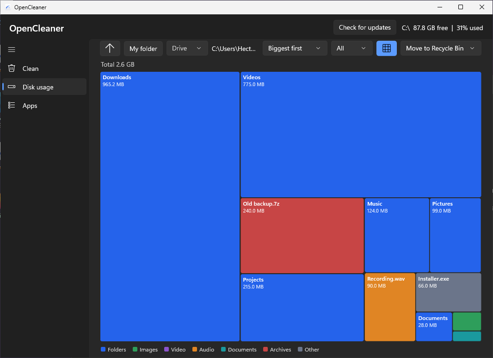
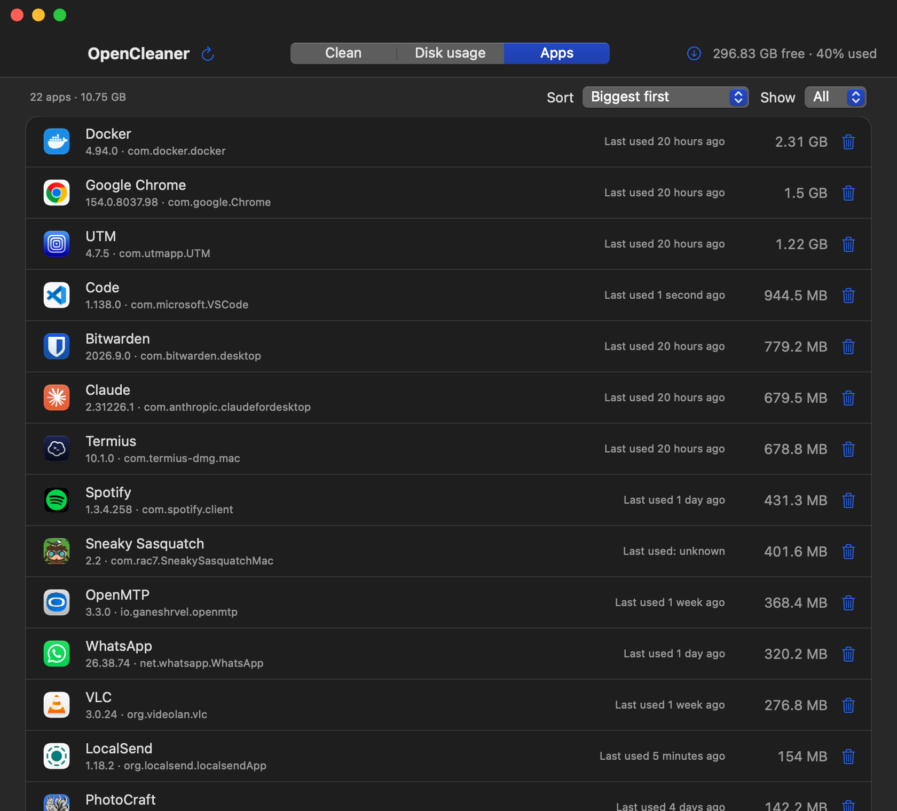

Free up space. See exactly what goes.
OpenCleaner is a free, open-source disk cleaner for Windows, macOS, Linux, Android and Android TV. It shows what it found, with sizes, and deletes only what you tick and confirm.
Latest release: 1.4. MIT license.
OpenCleaner in under a minute
What it does
Every category gets a row
OpenCleaner scans for reclaimable space and lists each category with its size. When there's nothing to remove, the row still shows and says Clean, so you can see what was checked.
Nothing is pre-selected blindly. You tick what goes, review the files inside an item if you want, then confirm.

Find what's really taking space
Disk usage shows your folders as a list or as a map of colored blocks sized by space. Click a folder to go in, click a file to preview it: images, text, details, and a built-in player for video and audio.
Sort by size, oldest, newest or type, show just the Top 5, 10, 50 or 100, and select several items to delete at once.

Find apps you never use
The Apps page lists every installed app with its size and when you last opened it. On desktop, Uninstall first shows the app and its leftover files, like caches and preferences.
Uninstalling is permanent. Nothing goes to the Trash, and anything that may hold your data starts unticked.

What each version cleans
- Windows
- Temp folders, Windows Update cache, crash dumps, Recycle Bin, browser caches, developer caches and Steam.
- macOS
- Homebrew, logs, app caches, Trash, Xcode data, simulators, iOS backups and Steam.
- Linux
- Your distro's package cache and unused packages (pacman, APT, DNF), old Snap revisions, the systemd journal, unused Flatpak runtimes, large cache folders, Trash and leftover Steam Proton prefixes.
- Android
- Its own cache, thumbnails, old APKs, WhatsApp sent copies, large files and per-app sizes, within what Android allows without root.
Download and install
Pick your system. Each guide has a short video and the same steps written out.
Windows 10 or 11.
Download the installer
Most PCs need x64. Use arm64 for ARM laptops and x86 for 32-bit Windows.
Get past SmartScreen
The installer isn't code-signed yet, so Windows warns about an unknown publisher. Select More info, then Run anyway.
Install
It installs just for you, with no administrator password. You can add a desktop shortcut.
Open OpenCleaner
Find it in the Start menu. Prefer not to install? The portable .exe runs on its own.
macOS 13 Ventura or later, on Apple silicon or Intel.
Download the zip
One download works on every Mac.
Move it to Applications
Double-click the zip to unzip it, then drag OpenCleaner into Applications.
Open it the first time
The app isn't notarized yet, so macOS asks first. Right-click the app, choose Open, then Open again.
No Open button?
On macOS 15 Sequoia and later, go to System Settings › Privacy & Security and click Open Anyway. You only do this once.
One self-contained file. Works on Arch, CachyOS, Debian, Ubuntu, Mint, Fedora, Bazzite and more.
Download the app
Use x86_64 for most PCs, arm64 for ARM laptops and 64-bit Raspberry Pi OS.
Make it executable
In a terminal, in your Downloads folder:
chmod +x opencleaner-*-linux-x86_64Run it
Run
./opencleaner-*-linux-x86_64. No install needed, keep the file wherever you like.Prefer clicking?
In your file manager, open the file's Properties and allow it to run as a program, then double-click it. The exact label depends on your desktop.
Android 11 or later.
Download the APK
Open this page on your phone and tap the download button.
Allow the install
Android asks before installing apps from outside the Play Store. Allow it for your browser only.
Install
Open the APK and tap Install. If Play Protect asks, follow its prompt.
Give it access
OpenCleaner needs All files access to find space, and Usage access for the Apps page. It takes you to each setting.
Google TV, Android TV 9 or later, and Fire TV. Choose how you'll send the app to your TV:
Get LocalSend
Install the free LocalSend app on your TV and on the computer or phone you'll send from.
Send the APK
Download the Android TV APK, then send it to your TV with LocalSend. Both devices must be on the same Wi-Fi.
Accept it on the TV
LocalSend on the TV asks before receiving. Select Accept.
Install it
Open the APK in LocalSend. The first time, allow LocalSend to install apps.
Open it with the remote
If it asks for access your TV has no screen for, it shows the adb commands to run. See the wireless adb steps.
Turn on developer mode
In Settings › System › About, select the build number 7 times. On Fire TV: My Fire TV › About, select the device name 7 times.
Turn on debugging
In Developer options, turn on USB debugging (ADB debugging on Fire TV, Network debugging on NVIDIA Shield). Note the TV's IP address under Settings › Network.
Connect over Wi-Fi
On your computer, run
adb connect 192.168.1.50with your TV's IP, then allow debugging on the TV. If your TV uses Wireless debugging (Android 11+), runadb pairwith its code first.Install the APK
adb install OpenCleaner-1.4-androidtv.apkGrant access if asked
If the TV has no screen for a permission, run:
adb shell appops set com.opencleaner.tv MANAGE_EXTERNAL_STORAGE allowadb shell appops set com.opencleaner.tv GET_USAGE_STATS allow
Every release includes SHA256SUMS.txt. From 1.3 on, the apps update themselves and check each download against it.
Built so you stay in control
A cleaner deletes things, so OpenCleaner is strict about what it touches.
- Nothing is deleted until you tick it and confirm.
- Each item can only delete inside its own allowed folders. Anything else is refused.
- Files in use are skipped, never forced.
- Deleting in Disk usage moves items to the Trash by default. Permanent delete is a setting, and the confirmation always says which one applies.
- Save games, device backups, orphaned packages and caches of running apps start unticked.
- Updates are checked against the release's SHA256SUMS.txt before installing.
Questions
Is OpenCleaner free?
Yes. It's free and open source under the MIT license, with no ads and no accounts.
Does it send any data?
Only one request to GitHub when the app starts, to check for a new release. Nothing about you or your files is sent.
Why do Windows and macOS warn me?
The Windows installer isn't code-signed and the Mac app isn't notarized yet. Those warnings appear for any app without them. The install guides show how to get past each one.
Can I undo a delete?
In Disk usage, deletes go to the Trash or Recycle Bin by default, so you can restore them. Permanent deletes, cleanup items and uninstalls can't be undone, and the confirmation tells you so. Android has no trash, so deletes there are always permanent.
Which Windows download do I need?
Most PCs need the x64 installer. Use arm64 for Windows on ARM laptops, and x86 only for 32-bit Windows 10. The portable .exe runs without installing.
Is it finished?
It's under active development. Some newer features are written but not yet tested on every platform, and the status table lists exactly which. Read the confirmation list before cleaning, and please report bugs on GitHub.